Exploring Data
EMSE 4572/6572: Exploratory Data Analysis
John Paul Helveston
September 30, 2026
Quiz 1
Write your name on the quiz!
Rules:
- Work alone; no outside help of any kind is allowed.
- No calculators, no notes, no books, no computers, no phones.

Tip of the week:
theme_set()
Default theme
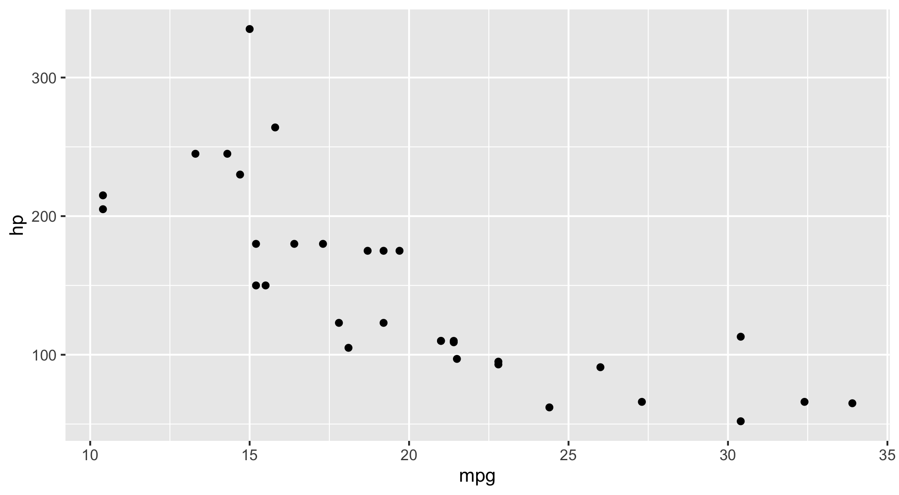
theme_bw(base_size = 20)
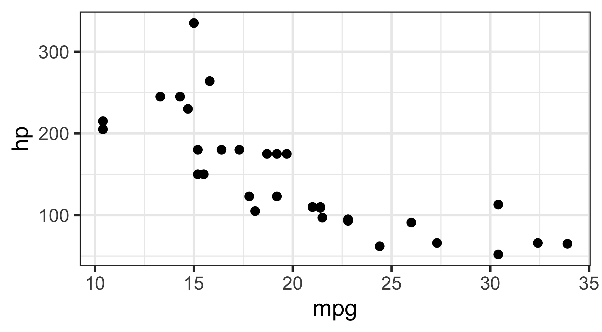
Week 6: Exploring Data
1. Exploring Data
2. Data Types
3. Centrality & Variability
4. Visualizing Centrality & Variability
5. Correlation
6. Visualizing Correlation
7. Visualizing Relationships
Week 6: Exploring Data
1. Exploring Data
2. Data Types
3. Centrality & Variability
4. Visualizing Centrality & Variability
5. Correlation
6. Visualizing Correlation
7. Visualizing Relationships
Exploratory Analysis
Goal: Form hypotheses.
Improves quality of questions.
(what we do in THIS class)
Confirmatory Analysis
Goal: Test hypotheses.
Improves quality of answers.
(what you do in a stats class)
Exploratory Analysis
RQ: Do people bike more when the weather is nice?
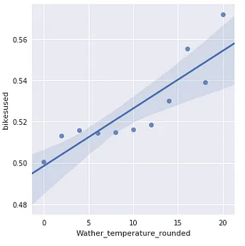
Confirmatory Analysis
Let’s build a model to predict bike usage based on weather.
Don’t be Icarus
“An approximate answer to the right question is better
than an exact answer to the wrong question.”
— John Tukey
EDA is an iterative process to help you
understand your data and ask better questions
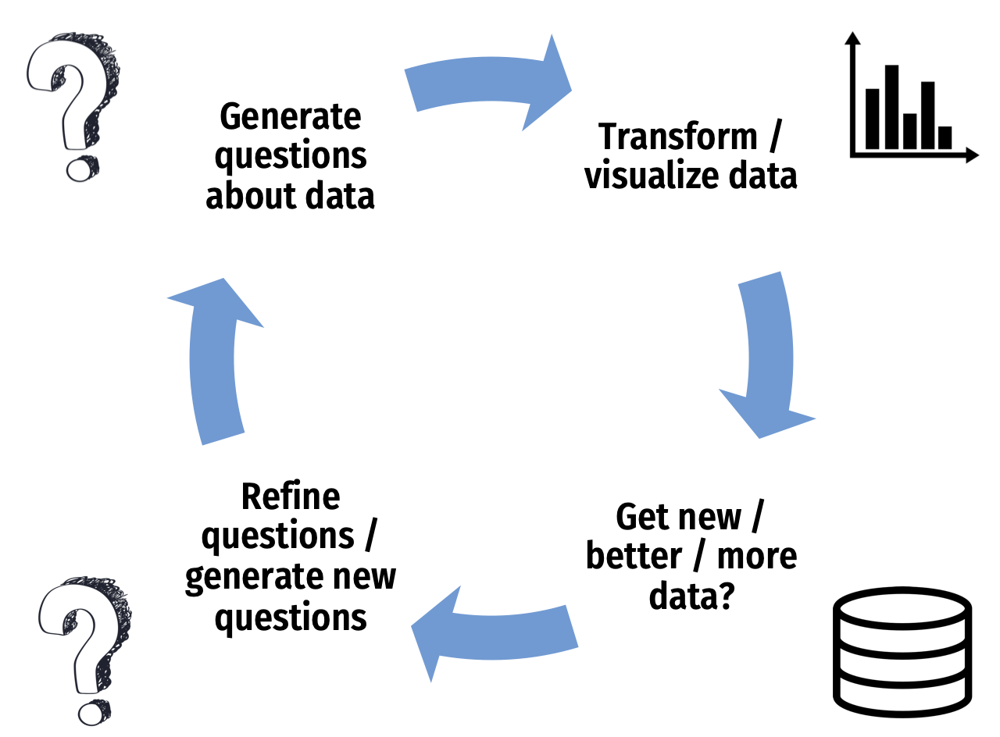
Week 6: Exploring Data
1. Exploring Data
2. Data Types
3. Centrality & Variability
4. Visualizing Centrality & Variability
5. Correlation
6. Visualizing Correlation
7. Visualizing Relationships
24,901
Earth’s circumference at the equator:
24,901
Earth’s circumference at the equator:
24,901 miles
Types of Data
Categorical
Subdivide things into groups
- What type?
- Which category?
Numerical
Measure things with numbers
- How many?
- How much?
Categorical (discrete) variables
Nominal
- Order doesn’t matter
- Differ in “name” (nominal) only
e.g. country in TB case data:
#> # A tibble: 6 × 4
#> country year cases population
#> <chr> <dbl> <dbl> <dbl>
#> 1 Afghanistan 1999 745 19987071
#> 2 Afghanistan 2000 2666 20595360
#> 3 Brazil 1999 37737 172006362
#> 4 Brazil 2000 80488 174504898
#> 5 China 1999 212258 1272915272
#> 6 China 2000 213766 1280428583
Ordinal
- Order matters
- Distance between units not equal
e.g.: Placement 2017 Boston marathon:
#> # A tibble: 6 × 3
#> Placement `Official Time` Name
#> <dbl> <time> <chr>
#> 1 1 02:09:37 Kirui, Geoffrey
#> 2 2 02:09:58 Rupp, Galen
#> 3 3 02:10:28 Osako, Suguru
#> 4 4 02:12:08 Biwott, Shadrack
#> 5 5 02:12:35 Chebet, Wilson
#> 6 6 02:12:45 Abdirahman, AbdiNumerical data
Interval
- Numerical scale with
arbitrary starting point - No “0” point
- Can’t say “x” is double “y”
e.g.: temp in Beaver data
#> day time temp activ
#> 1 346 840 36.33 0
#> 2 346 850 36.34 0
#> 3 346 900 36.35 0
#> 4 346 910 36.42 0
#> 5 346 920 36.55 0
#> 6 346 930 36.69 0
Ratio
- Has a “0” point
- Can be described as percentages
- Can say “x” is double “y”
e.g.: height & speed in wildlife impacts
#> # A tibble: 6 × 3
#> incident_date height speed
#> <dttm> <dbl> <dbl>
#> 1 2018-12-31 00:00:00 700 200
#> 2 2018-12-27 00:00:00 600 145
#> 3 2018-12-23 00:00:00 0 130
#> 4 2018-12-22 00:00:00 500 160
#> 5 2018-12-21 00:00:00 100 150
#> 6 2018-12-18 00:00:00 4500 250Key Questions
Categorical
Does the order matter?
Yes: Ordinal
No: Nominal
Numerical
Is there a “baseline”?
Yes: Ratio
No: Interval
Be careful of how variables are encoded!
When numbers are categories
- “Dummy coding”: e.g.,
passedTest=1or0) - “North”, “South”, “East”, “West” =
1,2,3,4
When ratio data are discrete (i.e. counts)
- Number of eggs in a carton, heart beats per minute, etc.
- Continuous variables measured discretely (e.g. age)
Time
- As ordinal categories: “Jan.”, “Feb.”, “Mar.”, etc.
- As interval scale: “Jan. 1”, “Jan. 2”, “Jan. 3”, etc.
- As ratio scale: “30 sec”, “60 sec”, “70 sec”, etc.
Week 6: Exploring Data
1. Exploring Data
2. Data Types
3. Centrality & Variability
4. Visualizing Centrality & Variability
5. Correlation
6. Visualizing Correlation
7. Visualizing Relationships
Summary Measures:
Single variables: Centrality & Variability
Two variables: Correlation
Centrality (a.k.a. The “Average” Value)
A single number representing the middle of a set of numbers
Mean: \(\frac{\text{Sum of values}}{\text{# of values}}\)
Median: “Middle” value (50% of data above & below)
Mean isn’t always the “best” choice
Beware the “flaw of averages”
What happened to the statistician that crossed a river with an average depth of 3 feet?
…he drowned
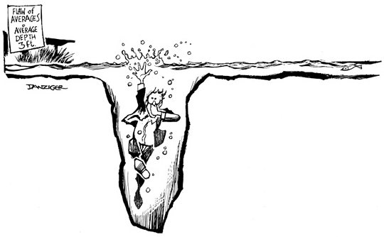
Variability (“Spread”)
Standard deviation: distribution of values relative to the mean
\(s = \sqrt{\frac{\sum_{i=1}^{N}(x_i - \bar{x})^2}{N - 1}}\)
Interquartile range (IQR): \(Q_3 - Q_1\) (middle 50% of data)
Range: max - min
Example: Days to ship
Complaints are coming in about orders shipped from warehouse B, so you collect some data:
Example: Days to ship
Complaints are coming in about orders shipped from warehouse B, so you collect some data:
Variability reveals difference in days to ship:
#> # A tibble: 2 × 5
#> warehouse mean median range sd
#> <chr> <dbl> <dbl> <dbl> <dbl>
#> 1 warehouseA 4.25 4.5 2 0.866
#> 2 warehouseB 4.25 4.5 9 2.70Example: Days to ship
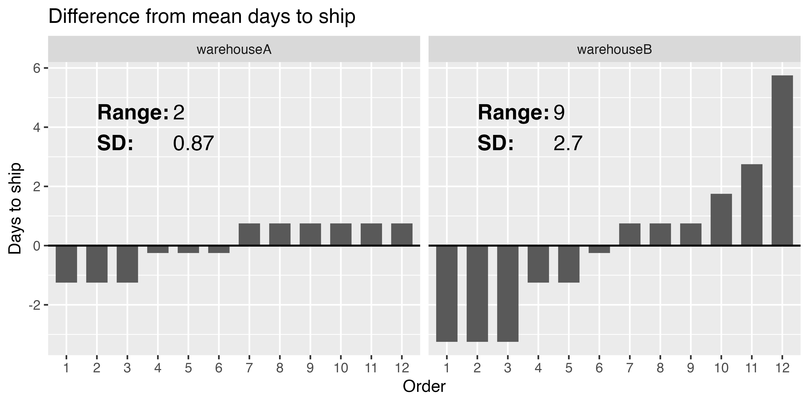
Interpreting the standard deviation
\(s = \sqrt{\frac{\sum_{i=1}^{N}(x_i - \bar{x})^2}{N - 1}}\)
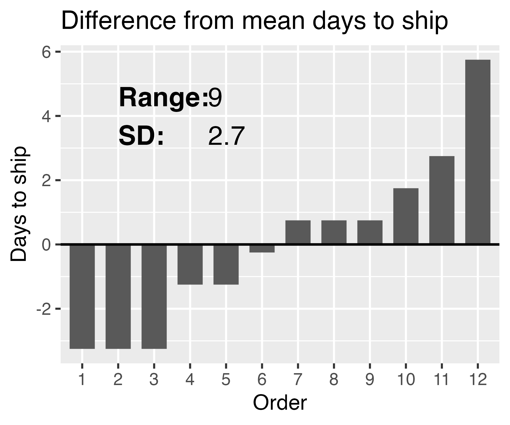
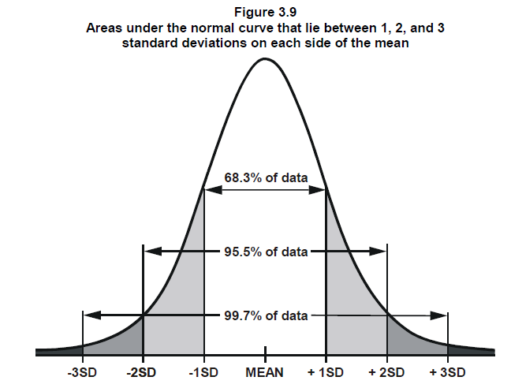
Outliers
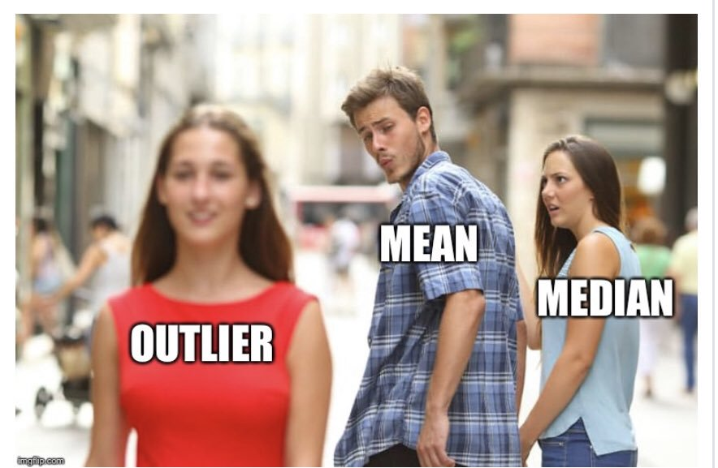
Mean & Standard Deviation are sensitive to outliers
Outliers: \(Q_1 - 1.5 IQR\) or \(Q_3 + 1.5 IQR\)
Extreme values: \(Q_1 - 3 IQR\) or \(Q_3 + 3 IQR\)
Robust statistics for continuous data
(less sensitive to outliers)
Centrality: Use median rather than mean
Variability: Use IQR rather than standard deviation
Practice with summary measurements
1) Read in the following data sets:
milk_production.csvlotr_words.csv
2) For each variable in each data set, if possible, summarize its
1. Centrality
2. Variability
Week 6: Exploring Data
1. Exploring Data
2. Data Types
3. Centrality & Variability
4. Visualizing Centrality & Variability
5. Correlation
6. Visualizing Correlation
7. Visualizing Relationships
“Visualizing data helps us think”
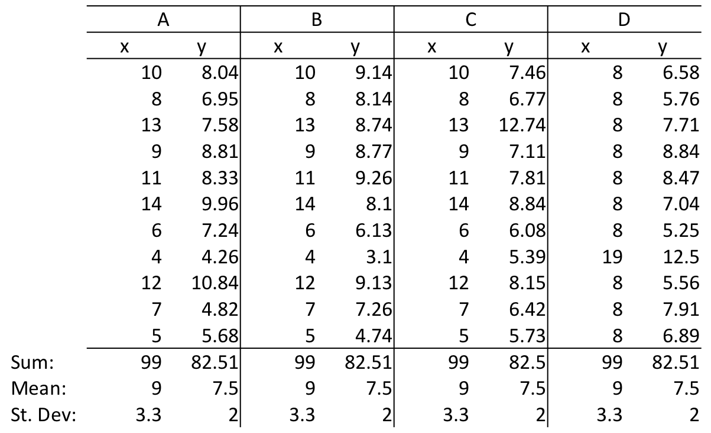
Stephen Few (2009, pg. 6)
Anscombe’s Quartet
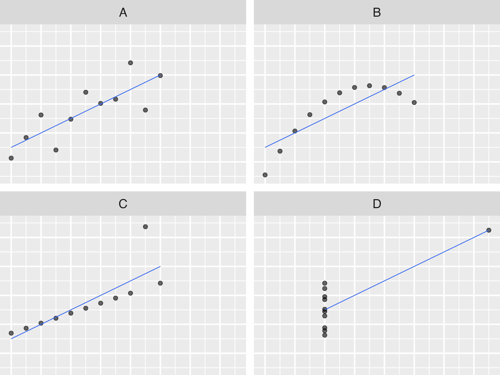
Stephen Few (2009, pg. 6)
Anscombe’s Quartet

The data type determines
how to summarize it
Nominal
(Categorical)
(Categorical)
Measures: - Frequency counts /
Proportions
Charts: - Bars
Ordinal
(Categorical)
(Categorical)
Measures: - Frequency counts /
Proportions - Centrality:
Median, Mode - Variability: IQR
Charts: - Bars
Numerical
(Continuous)
(Continuous)
Measures: - Centrality:
Mean, median - Variability: Range, standard deviation, IQR
Charts: - Histogram - Boxplot
Summarizing Nominal data
Summarize with counts / percentages
Summarizing Ordinal data
Summarize: Counts / percentages
#> # A tibble: 12 × 3
#> incident_month n p
#> <dbl> <int> <dbl>
#> 1 9 7980 0.140
#> 2 10 7754 0.136
#> 3 8 7104 0.125
#> 4 5 6161 0.108
#> 5 7 6133 0.108
#> 6 6 4541 0.0797
#> 7 4 4490 0.0788
#> 8 11 4191 0.0736
#> 9 3 2678 0.0470
#> 10 12 2303 0.0404
#> 11 1 1951 0.0342
#> 12 2 1692 0.0297Summarizing continuous variables
Histograms:
- Skewness
- Number of modes
Boxplots:
- Outliers
- Comparing variables
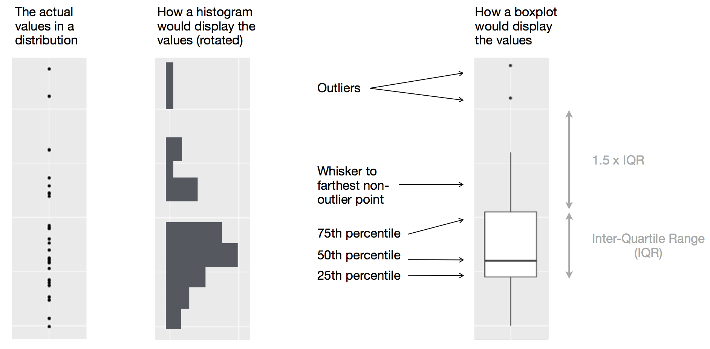
Histogram: Identify Skewness & # of Modes
Summarise:
Mean, median, sd, range, & IQR:
Histogram: Identify Skewness & # of Modes

Boxplot: Identify outliers

Histogram
- Skewness
- Modes
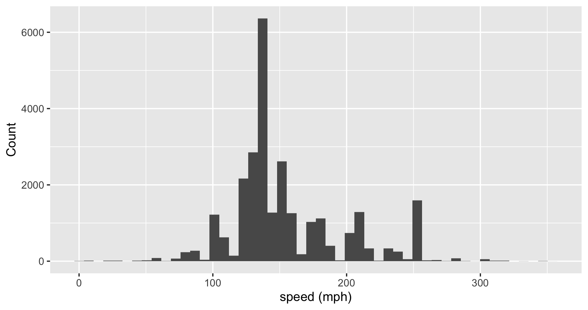
Boxplot
- Outliers
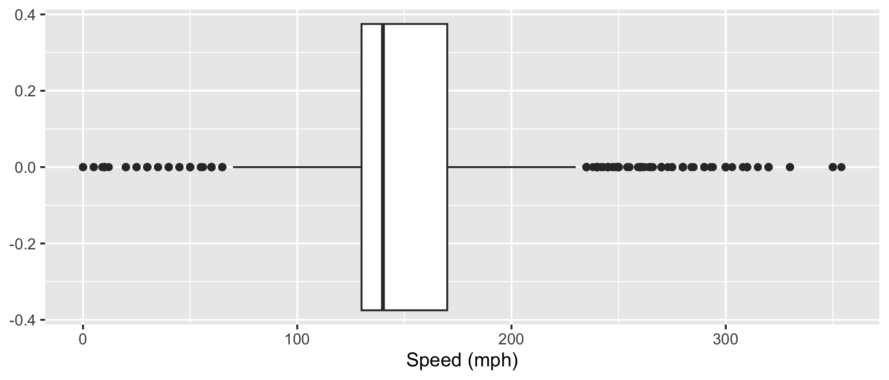
Practicing visual summaries
- Read in the following data sets:
faithful.csvmarathon.csv
- Summarize the following variables using an appropriate chart (bar chart, histogram, and / or boxplot):
- faithful:
eruptions - faithful:
waiting - marathon:
Age - marathon:
State - marathon:
Country - marathon:
`Official Time`
Break!
Stand up, Move around, Stretch!
Week 6: Exploring Data
1. Exploring Data
2. Data Types
3. Centrality & Variability
4. Visualizing Centrality & Variability
5. Correlation
6. Visualizing Correlation
7. Visualizing Relationships
Correlation: a rather racist origin in eugenics (“well born”)
Sir Francis Galton (1822 - 1911)
- Charles Darwin’s cousin.
- “Father” of eugenics.
- Interested in heredity.

Karl Pearson (1857 - 1936)
- Galton’s (hero-worshiping) protégé.
- Defined correlation equation.
- “Father” of mathematical statistics.
Galton’s family data
Galton, F. (1886). “Regression towards mediocrity in hereditary stature”. The Journal of the Anthropological Institute of Great Britain and Ireland 15: 246-263.
Galton’s question: Does marriage selection indicate a relationship between the heights of husbands and wives?
(He called this “assortative mating”)
“midparent height” is just a scaled mean:
How do you measure correlation?
Pearson came up with this:
\(r = \frac{\text{Cov}(x, y)}{\text{sd}(x) * \text{sd}(y)}\)
How do you measure correlation?
\(r = \frac{\text{Cov}(x, y)}{\text{sd}(x) * \text{sd}(y)}\)
Assumptions:
- Variables must be interval or ratio
- Linear relationship
How do you interpret \(r\)?
What does \(r\) mean?
- \(\pm 0.1 - 0.3\): Weak
- \(\pm 0.3 - 0.5\): Moderate
- \(\pm 0.5 - 0.8\): Strong
- \(\pm 0.8 - 1.0\): Very strong
The datasaurus
(More here)
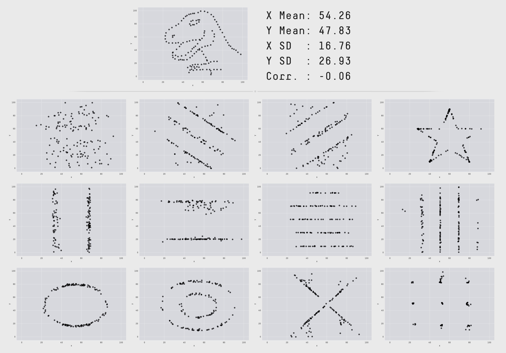
Coefficient of determination: \(r^2\)
Percent of variance in one variable that is explained by the other variable
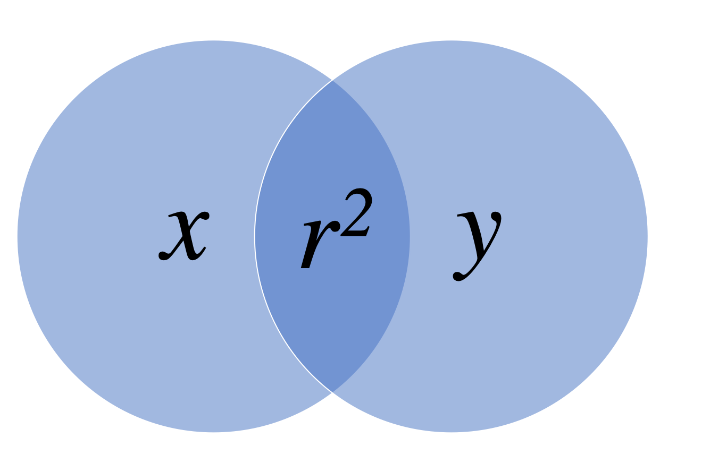
| \(r\) | \(r^2\) |
|---|---|
| 0.1 | 0.01 |
| 0.2 | 0.04 |
| 0.3 | 0.09 |
| 0.4 | 0.16 |
| 0.5 | 0.25 |
| 0.6 | 0.36 |
| 0.7 | 0.49 |
| 0.8 | 0.64 |
| 0.9 | 0.81 |
| 1.0 | 1.00 |
You should report both \(r\) and \(r^2\)
Correlation between parent and child height is 0.32, therefore 10% of the variance in the child height is explained by the parent height.
Correlation != Causation
X causes Y
- Training causes improved performance
Y causes X
- Good (bad) performance causes people to train harder (less hard).
Z causes both X & Y
- Commitment and motivation cause increased training and better performance.
Be weary of dual axes!
(They can cause spurious correlations)
Dual axes
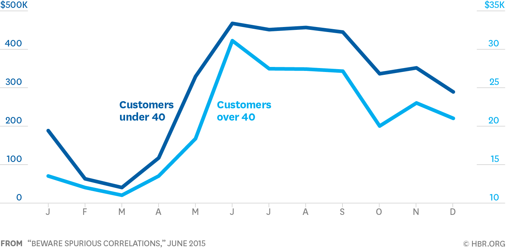
Single axis
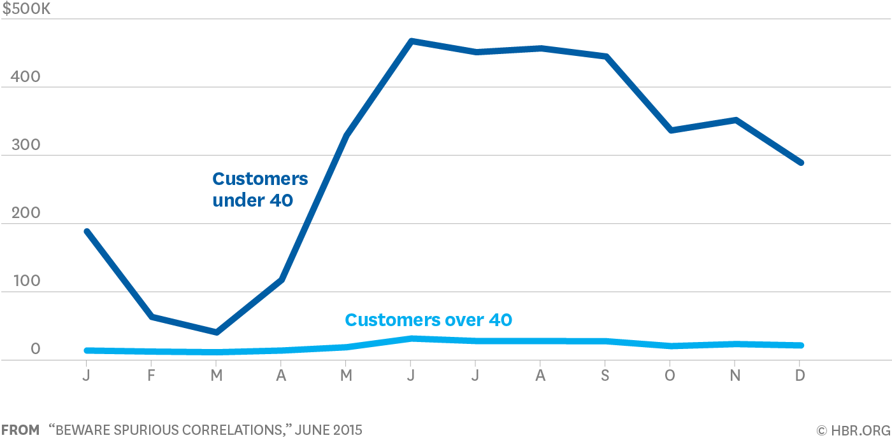
Outliers
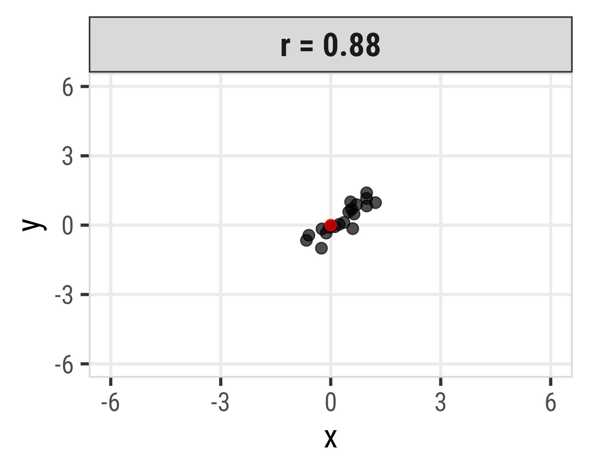
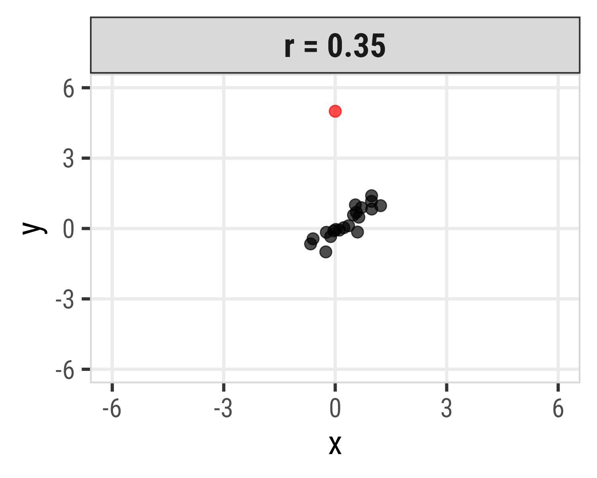
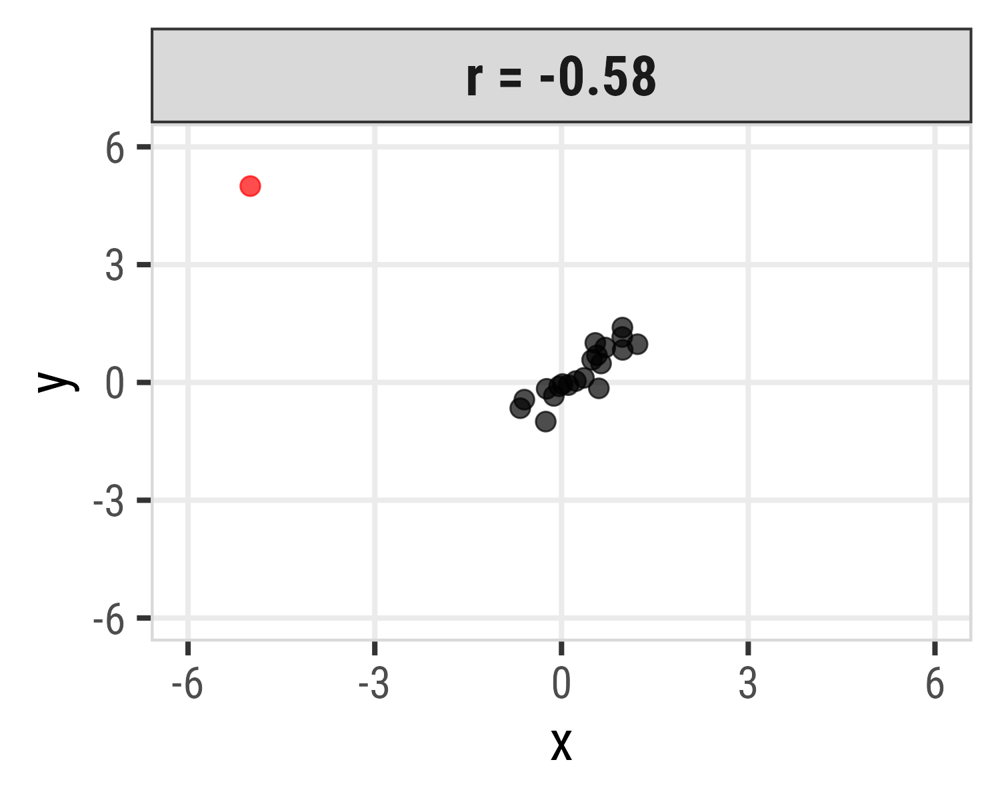
Pearson correlation is highly sensitive to outliers
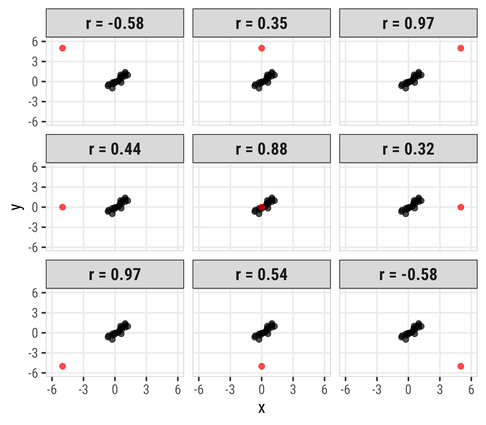
Spearman’s rank-order correlation
\(r = \frac{\text{Cov}(x, y)}{\text{sd}(x) * \text{sd}(y)}\)
- Separately rank the values of X & Y.
- Use Pearson’s correlation on the ranks instead of the \(x\) & \(y\) values.
Assumptions:
- Variables can be ordinal, interval or ratio
- Relationship must be monotonic (i.e. does not require linearity)
Spearman correlation more robust to outliers
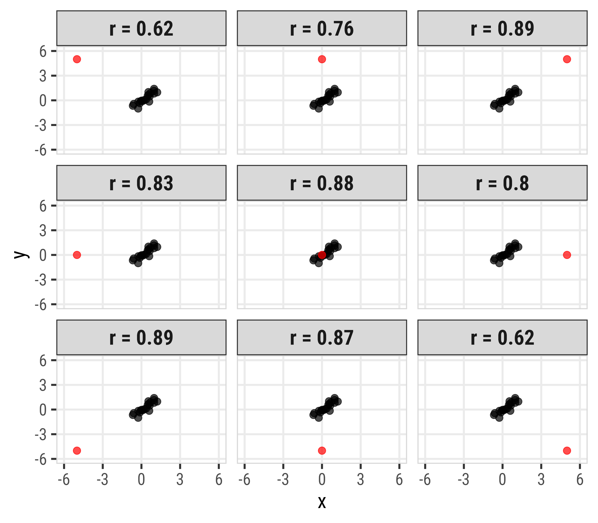
Spearman correlation more robust to outliers
| Pearson | Spearman |
|---|---|
| -0.56 | 0.53 |
| 0.39 | 0.69 |
| 0.94 | 0.81 |
| 0.38 | 0.76 |
| 0.81 | 0.79 |
| 0.31 | 0.70 |
| 0.95 | 0.81 |
| 0.51 | 0.75 |
| -0.56 | 0.53 |
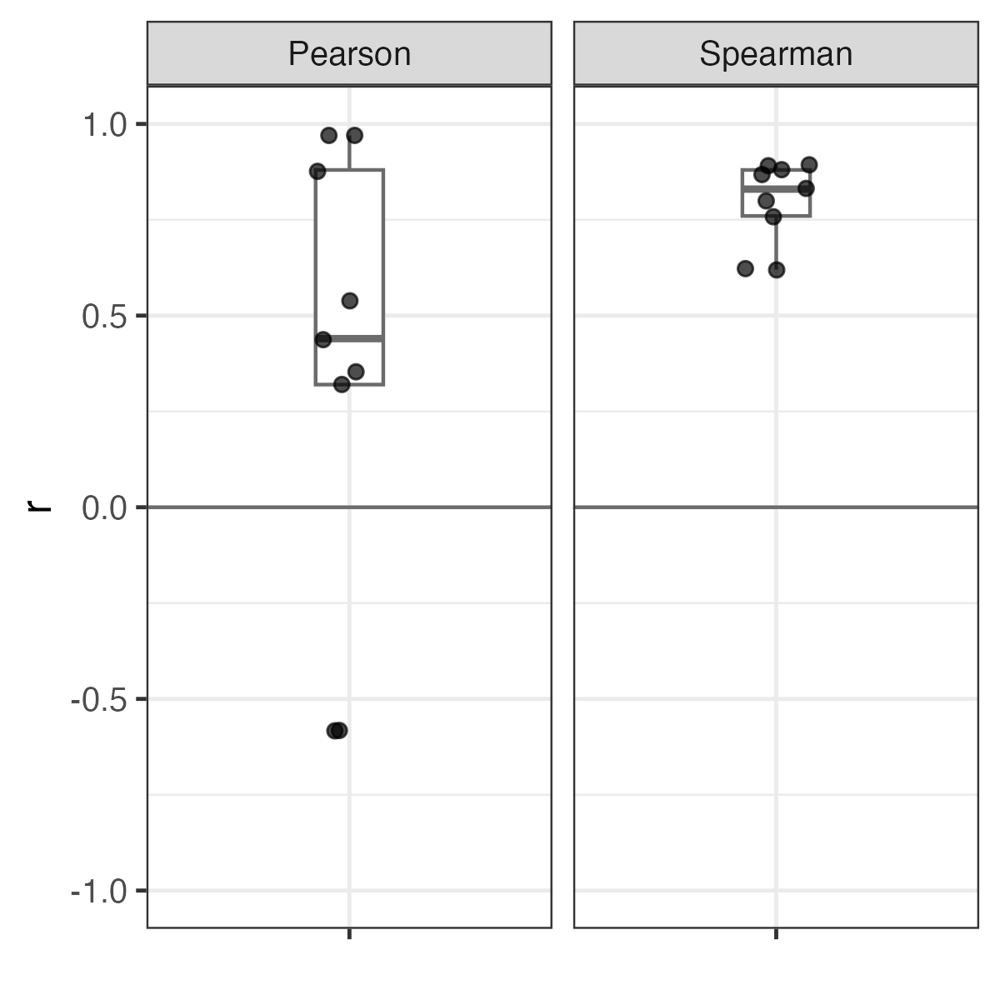
Summary of correlation
- Pearson’s correlation: Described the strength of a linear relationship between two variables that are interval or ratio in nature.
- Spearman’s rank-order correlation: Describes the strength of a monotonic relationship between two variables that are ordinal, interval, or ratio. It is more robust to outliers.
- The coefficient of determination ( \(r^2\) ) describes the amount of variance in one variable that is explained by the other variable.
- Correlation != Causation
Week 6: Exploring Data
1. Exploring Data
2. Data Types
3. Centrality & Variability
4. Visualizing Centrality & Variability
5. Correlation
6. Visualizing Correlation
7. Visualizing Relationships
Scatterplots: The correlation workhorse
Adding a correlation label to a chart
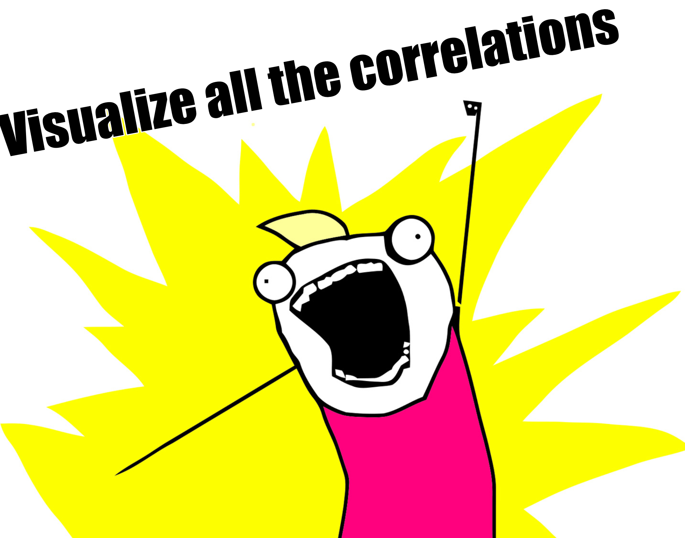
Visualize all the correlations: ggcorr()
Visualizing correlations: ggcorr()

Visualizing correlations: ggcorr()
Correlograms: ggpairs()
Correlograms: ggpairs()
Your turn
Using the penguins data frame:
Find the two variables with the largest correlation in absolute value (i.e. closest to -1 or 1).
Create a scatter plot of those two variables.
Add an annotation for the Pearson correlation coefficient.

Simpson’s Paradox: when correlation betrays you
Body mass vs. Bill depth
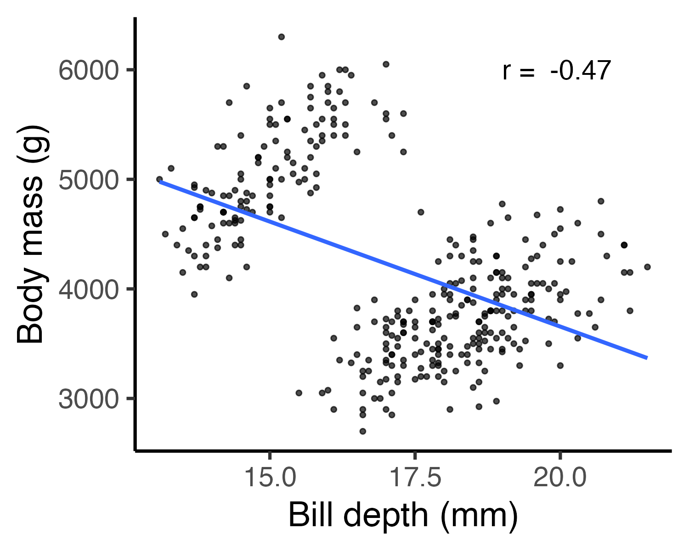
Body mass vs. Bill depth
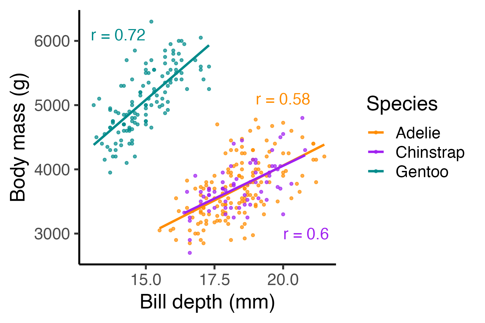
Week 6: Exploring Data
1. Exploring Data
2. Data Types
3. Centrality & Variability
4. Visualizing Centrality & Variability
5. Correlation
6. Visualizing Correlation
7. Visualizing Relationships
Visualizing variation
Ask yourself:
- What type of variation occurs within my variables?
- What type of covariation occurs between my variables?
Check out these guides
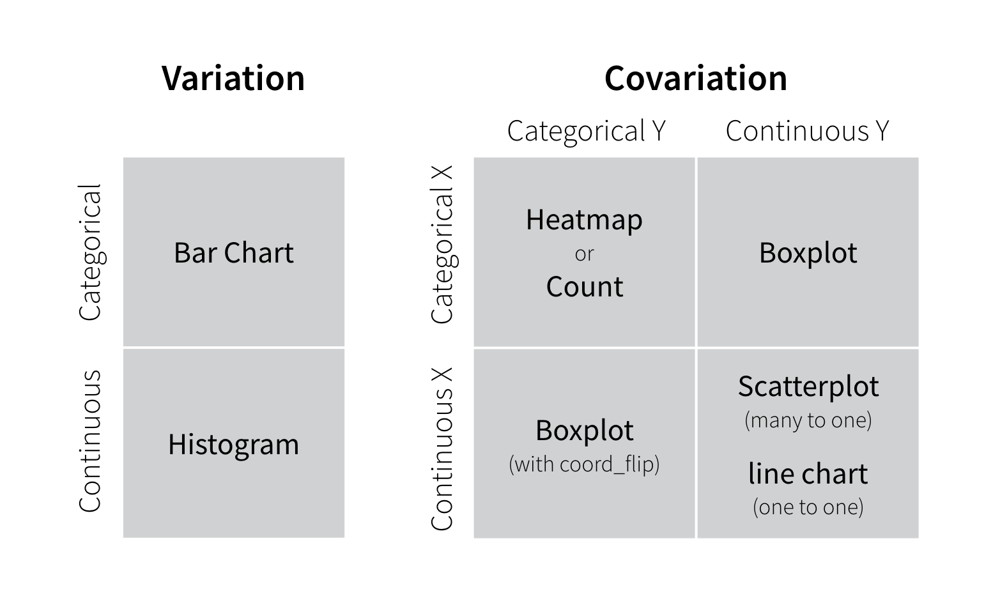
Two Categorical Variables
Summarize with a table of counts
#> # A tibble: 20 × 3
#> operator time_of_day n
#> <chr> <chr> <int>
#> 1 AMERICAN AIRLINES Dawn 458
#> 2 AMERICAN AIRLINES Day 7809
#> 3 AMERICAN AIRLINES Dusk 584
#> 4 AMERICAN AIRLINES Night 3710
#> 5 AMERICAN AIRLINES <NA> 2326
#> 6 DELTA AIR LINES Dawn 267
#> 7 DELTA AIR LINES Day 4846
#> 8 DELTA AIR LINES Dusk 353
#> 9 DELTA AIR LINES Night 2090
#> 10 DELTA AIR LINES <NA> 1449
#> 11 SOUTHWEST AIRLINES Dawn 394
#> 12 SOUTHWEST AIRLINES Day 9109
#> 13 SOUTHWEST AIRLINES Dusk 599
#> 14 SOUTHWEST AIRLINES Night 5425
#> 15 SOUTHWEST AIRLINES <NA> 2443
#> 16 UNITED AIRLINES Dawn 151
#> 17 UNITED AIRLINES Day 3359
#> 18 UNITED AIRLINES Dusk 181
#> 19 UNITED AIRLINES Night 1510
#> 20 UNITED AIRLINES <NA> 9915Two Categorical Variables
Convert to “wide” format with pivot_wider() to make it easier to compare values
#> # A tibble: 4 × 6
#> operator Dawn Day Dusk Night `NA`
#> <chr> <int> <int> <int> <int> <int>
#> 1 AMERICAN AIRLINES 458 7809 584 3710 2326
#> 2 DELTA AIR LINES 267 4846 353 2090 1449
#> 3 SOUTHWEST AIRLINES 394 9109 599 5425 2443
#> 4 UNITED AIRLINES 151 3359 181 1510 9915Two Categorical Variables
Visualize with bars:
map fill to denote 2nd categorical var
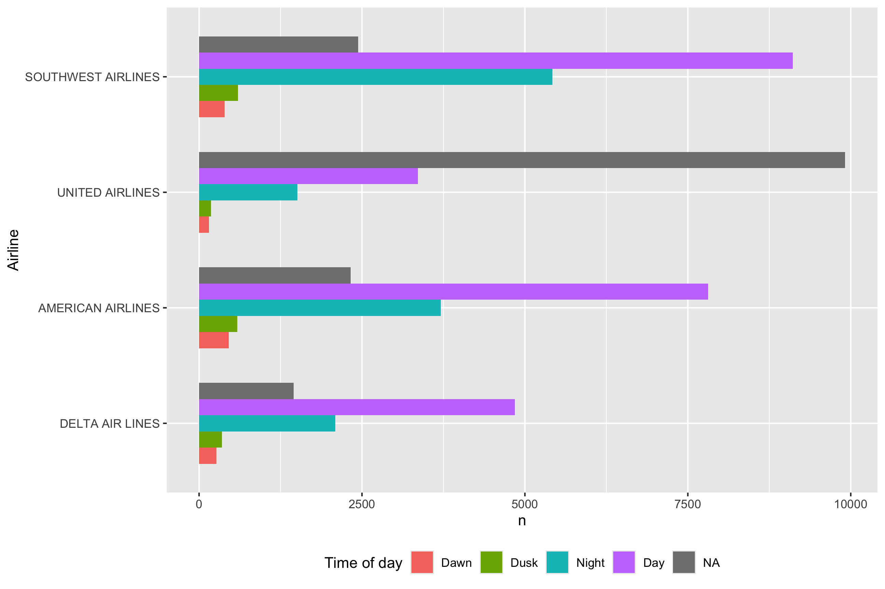
Two Continuous Variables
Visualize with scatterplot - looking for clustering and/or correlational relationship
One Continuous, One Categorical
Visualize with boxplot
Practice doing EDA
Read in the
candy_rankings.csvdata setsPreview the data, note the data types and what each variable is.
Visualize (at least) three relationships between two variables (guided by a question) using an appropriate chart:
- Bar chart
- Scatterplot
- Boxplot